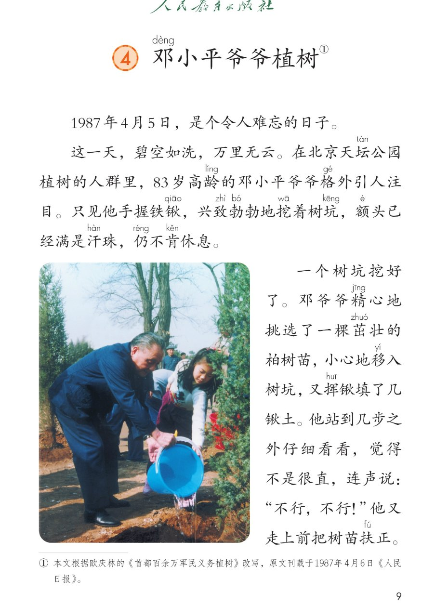
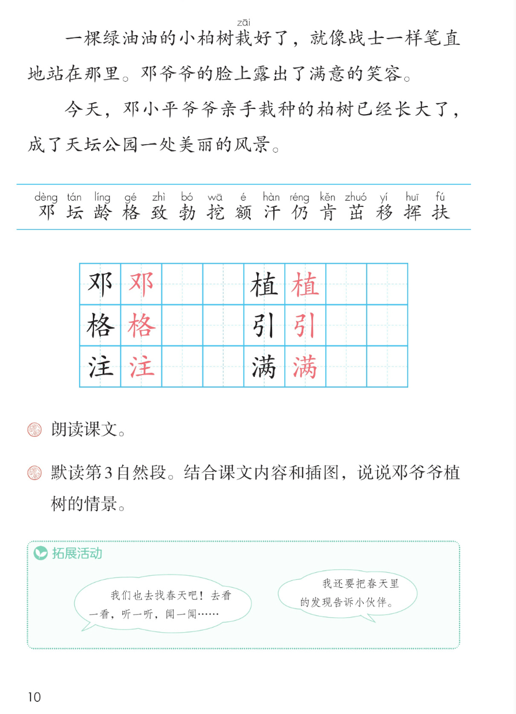

×
🔊 手机听不到声音怎么办？
① 先把手机
媒体音量调大 ，确认没开静音、没连蓝牙耳机；在微信里打开的，点右上角「⋯ → 用浏览器打开」。
② 还是没声音？到应用商店免费下载
Microsoft Edge 浏览器 （它自带朗读发声），用它打开本页面就能出声。
③ 换了 Edge 仍然没声音，说明这部手机的
硬件/系统不支持 网页朗读（多为老旧机型）；近几年买的新手机一般都能正常播放。
→ 打开声音自检
🌳 第 4 课《邓小平爷爷植树》· 有声图文带读
统编版语文 · 第一单元·阅读 · 课本 第 9~10 页 · 本文根据欧庆林《首都百余万军民义务植树》改写
课文 5 段 · 11 句
会认字 15
会写字 6
听写词 10
近义词 4 组
深入理解 8 题
本课本领 朗读·默读·按顺序说植树情景
🎧 五步学（可随时点任意一句、一个字、一个词单独听）： ① 听读课文 ——5 个自然段、11 句，一句一句读，读到哪一句哪一句发光；开「跟读」后读完一句留时间让你自己读。② 学字词 ——15 个会认字、6 个会写字（含书写提示），点一个读一个。③ 词语·听写·造句 ——读课本第 10 页课后题和拓展活动，听写 10 个词（读两遍→写→报答案），再听四组近义词辨析。 ④ 深入理解 ——8 道题（认知 / 理解 / 运用 / 拓展），开放题答案不唯一，先想后看。⑤ 说情景·分工朗读 ——借助课本插图，按先、再、接着、然后、最后说说邓爷爷植树的情景，再按自然段分工朗读课文。
📚 本册第一单元·阅读（照课本目录）： 1 古诗二首 → 2 找春天 → 3 开满鲜花的小路4 邓小平爷爷植树（本课） → 语文园地一前后连起来看：诗里的春天 → 出门找春天 → 春天里的一路鲜花 → 亲手种下春天
📖 课文出处（课本第 9 页脚注照录） ：① 本文根据欧庆林的《首都百余万军民义务植树》改写，
点段前的 ①~⑤ 听整段
🔁 跟读模式：关
👁 隐藏注音（自测用）
注音只标本课要认、要写的字，以及课本随文标了音的字；读音照课本第 9~10 页
🎤 朗读要求 · 朗读课文 + 默读第 3 自然段（课后题①②的老师标准） 读准字音 ：邓、坛、龄、锹、坑、茁、栽、扶跟着课本第 9~10 页的注音读；「植」「引」「注」「满」是会写字，也要读准；不添字、不漏字 ：逗号停得短，句号停得长；「碧空如洗，万里无云」「兴致勃勃」这样的四字词要读完整；默读第 3 自然段 ：不出声、不指读 ，边读边找邓爷爷一连串的动作，再对着插图想一想当时的情景；唯一的人物的话 ：「不行，不行！」是邓爷爷说的，要读得干脆、着急 ；其余是旁白，读得清楚平稳；结尾照应开头 ：最后一段读慢一点，把「令人难忘的日子」和「美丽的风景」连起来体会。
①
1987年4月5日，是个令人难忘的日子。
②
这一天，碧空如洗，万里无云。
在北京天坛tán 公园植zhí 树的人群里，83岁高龄líng 的邓dèng 小平爷爷格gé 外引yǐn 人注zhù 目。
只见他手握铁锹qiāo ，兴致zhì 勃bó 勃地挖wā 着树坑kēng ，额é 头已经满mǎn 是汗hàn 珠，仍réng 不肯kěn 休息。
③
一个树坑挖好了。
邓dèng 爷爷精jīng 心地挑选了一棵茁zhuó 壮的柏树苗，小心地移yí 入树坑，又挥huī 锹填了几锹土。他站到几步之外仔细看看，觉得不是很直，连声说：“不行，不行！”
他又走上前把树苗扶fú 正。
④
一棵绿油油的小柏树栽zāi 好了，就像战士一样笔直地站在那里。
邓dèng 爷爷的脸上露出了满意的笑容。
⑤
今天，邓dèng 小平爷爷亲手栽种的柏树已经长大了，成了天坛公园一处美丽的风景。
🤔 想一想（点我可跳过）
点一张图，听读整页

第 9 页 · 课题、前 3 段与插图

第 10 页 · 后 2 段、生字表与课后题
📖 人教版《语文》二年级下册 · 课本第 9~10 页 · 图片仅供个人学习，版权归人民教育出版社所有
点一个字，听读音、词语和课文里的句子；「锹」「坑」「精」「栽」是课本随文注音的字，不在生字表里
结构、部首、笔画与书写提示为通用规范，供参考，以教材和老师的指导为准
邓
dèng
邓爷爷 · 姓邓
4 画 · 左右（又）
左又写窄、捺变点，右耳旁竖要直
植
zhí
植树 · 种植
12 画 · 左右（木）
木字旁窄，右边直里三横别少写
格
gé
格外 · 方格
10 画 · 左右（木）
木字旁窄，右边各字撇捺舒展
引
yǐn
引人注目 · 引导
4 画 · 左右（弓）
左弓写窄，右竖要直、稍稍出头
注
zhù
引人注目 · 注意
8 画 · 左右（氵）
三点水呈弧形，右边主字点别丢
满
mǎn
满意 · 满是汗珠
13 画 · 左右（氵）
三点水窄，右边草字头下两入要写扁
点一行，听题目、动作顺序和说话支架
📖 课后题（课本第 10 页照录） ：① 朗读课文。🌿 拓展活动：我们也去找春天吧！去看一看，听一听，闻一闻…… 本课没有「读一读，记一记」词语表；下面 6 行是课后题、第 3 自然段的动作顺序和说话支架。
课后题 ① 朗读课文。
课后题 ② 默读第 3 自然段。结合课文内容和插图，说说邓爷爷植树的情景。
第 3 段·动作 挖好树坑 → 挑选树苗 → 移入树坑 → 挥锹填土 → 仔细看看 → 扶正
说话支架 先……再……接着……然后……最后……
拓展活动 1 我们也去找春天吧！去看一看，听一听，闻一闻……
拓展活动 2 我还要把春天里的发现告诉小伙伴。
读两遍 → 你在纸上写 → 报答案 → 听示范句
准备听写 · 共 10 个词
○ ○ ○
点下面的「开始听写」，听到一个词就写一个词。
▶ 开始听写
🔁 再读一遍
👁 看答案
点词听读，点句子听示范句，再自己说一句
1 邓爷爷 会写字 · 邓
示范句：八十三岁高龄的邓小平爷爷格外引人注目。
✏️ 我也能说：谁 + 在做什么
2 格外 会写字 · 格
示范句：邓小平爷爷格外引人注目。
✏️ 我也能说：格外 + 怎么样
3 引人注目 会写字 · 引、注
示范句：83岁高龄的邓小平爷爷格外引人注目。
✏️ 我也能说：什么 + 引人注目
4 植树 会写字 · 植
示范句：在北京天坛公园植树的人群里，邓爷爷格外引人注目。
✏️ 我也能说：谁 + 在哪里 + 植树
5 满意 会写字 · 满
示范句：邓爷爷的脸上露出了满意的笑容。
✏️ 我也能说：谁 + 露出了满意的笑容
6 树坑 课文里的词
示范句：只见他手握铁锹，兴致勃勃地挖着树坑。
✏️ 我也能说：谁 + 怎样地 + 挖着树坑
7 精心 课文里的词
示范句：邓爷爷精心地挑选了一棵茁壮的柏树苗。
✏️ 我也能说：谁 + 精心地 + 做什么
8 茁壮 课文里的词
示范句：他挑选了一棵茁壮的柏树苗。
✏️ 我也能说：茁壮的 + 什么
9 扶正 课文里的词
示范句：他又走上前把树苗扶正。
✏️ 我也能说：把什么 + 扶正
10 风景 课文里的词
示范句：柏树成了天坛公园一处美丽的风景。
✏️ 我也能说：哪里 + 有一处美丽的风景
相同点 / 不一样在哪 / 各造一句
格外 — 特别
相同：都写比平常更进一层 。
不一样：格外 常带着跟别的一比、更显眼的意思，课文说邓爷爷在植树的人群里「格外引人注目」；特别 用得更宽，可以说特别高兴、特别想去，也能单独用。
格外：邓爷爷格外引人注目。
精心 — 细心
相同：都写很用心、不马虎 。
不一样：精心 偏事先花了心思去挑、去准备，课文说「精心地挑选」树苗；细心 偏做的时候处处留意，比如细心地扶正、细心地检查。
精心：精心地挑选了一棵茁壮的柏树苗。
满意 — 满足
相同：都写心里觉得挺好 。
不一样：满意 是对做出来的结果认可，课文里小柏树栽得像战士一样笔直，邓爷爷「露出了满意的笑容」；满足 偏觉得已经够了、不想再要更多。
满意：邓爷爷的脸上露出了满意的笑容。
美丽 — 漂亮
相同：都写好看 。
不一样：美丽 多写风景、大自然，也能写心灵，课文结尾写「一处美丽的风景」；漂亮 多写衣服、样子、小物件，说起来更口语。
美丽：成了天坛公园一处美丽的风景。
写天气的四字词 碧空如洗 万里无云
写劲头与样子 兴致勃勃 绿油油 笔直 茁壮
第 3 段的动作词 挖好 挑选 移入 挥锹填 仔细看看 扶正
顺序词说话 先……再……接着……然后……最后……
标「答案不唯一」的题，说得有道理都对
认知 课文开头说哪一天是个令人难忘的日子？那天的天气怎么样？看解析
🤔 想一想
解析：
1987年4月5日，是个令人难忘的日子。
这一天，碧空如洗，万里无云。
先说日子，再说天气，两句话合起来就是开头。
认知 课后题②：默读第 3 自然段，邓爷爷植树时做了哪些动作？按顺序说一说。看解析
🤔 想一想
解析：
一个树坑挖好了。
挑选、移入、挥锹填土。
仔细看看，发现不很直，又走回去扶正。
理解 课文写邓爷爷「额头已经满是汗珠，仍不肯休息」，为什么要写汗珠？看解析
🤔 想一想
解析：
干了很久，很用力，很累。
还、依旧，累了也不停。
越累越坚持，认真就写出来了。
理解 树苗已经栽进坑、土也填了，邓爷爷为什么又走回去把它扶正？看解析
🤔 想一想
解析：
站到几步之外仔细看看，觉得不是很直。
连声说不行不行，是马上否定、马上改。
第 4 自然段写小柏树像战士一样笔直地站在那里。
理解 开头说「令人难忘的日子」，结尾写柏树「成了天坛公园一处美丽的风景」，这两处怎么连起来看？看解析
🤔 想一想
解析：
1987年4月5日，是个令人难忘的日子。
今天，柏树已经长大了，成了天坛公园一处美丽的风景。
从栽下到长大，中间隔了很多年。
运用 课后题②：结合课文内容和插图，说说邓爷爷植树的情景。看解析
🤔 想一想
解析：
第 9 页照片里邓爷爷在给树苗浇水，可以对着说。
挖好、挑选、移入、填土、看看、扶正。
先、再、接着、然后、最后。
🌈 答案不唯一，说得有道理都对
运用 拓展活动①：我们也去找春天吧！去看一看，听一听，闻一闻，你打算怎么找？看解析
🤔 想一想
解析：
找春天用眼睛、耳朵、鼻子，还用手。
看到什么、听到什么、闻到什么。
在校园里、在小河边、在公园里。
🌈 答案不唯一，说得有道理都对
拓展 拓展活动②：把春天里的发现告诉小伙伴，你想说什么？亲手种下一棵树为什么也像一份美好的礼物？看解析
🤔 想一想
解析：
花籽漏在路上，长成一路鲜花，让大家都高兴。
亲手栽的柏树长成了天坛公园一处美丽的风景。
你想把哪个发现、和谁一起分享。
🌈 答案不唯一，说得有道理都对
点一步，听这一步
1
先 · 难忘的日子
2
再 · 挖树坑
3
接着 · 选苗移苗填土
4
然后 · 回头扶正
5
最后 · 笔直的小柏树
💬 课后题②照录 ：默读第 3 自然段。结合课文内容和插图，说说邓爷爷植树的情景。先 说难忘的日子和好天气 → 再 说手握铁锹挖树坑、满头汗仍不肯休息 → 接着 说选苗、移苗、填土 → 然后 说发现不直、又走回去扶正 → 最后 说小柏树笔直地站住、邓爷爷满意地笑了。默读时不出声、不指读。
点一张卡，听这一位读的那几句
📅 朗读员·难忘的日子
1987年4月5日，是个令人难忘的日子。
💬 开头读得平稳、郑重
☀️ 朗读员·好天气
这一天，碧空如洗，万里无云。
💬 两个四字词读得亮、舒展
👀 朗读员·人群里
在北京天坛公园植树的人群里，83岁高龄的邓小平爷爷格外引人注目。
💬 高龄、格外引人注目读清楚
💪 朗读员·挖树坑
只见他手握铁锹，兴致勃勃地挖着树坑，额头已经满是汗珠，仍不肯休息。
💬 兴致勃勃有劲，末句稳一点
🌱 朗读员·树坑挖好了
一个树坑挖好了。
💬 句子短，读完稍停
🌲 朗读员·选苗移苗填土
邓爷爷精心地挑选了一棵茁壮的柏树苗，小心地移入树坑，又挥锹填了几锹土。
💬 精心、小心读得慢而轻
🗣️ 邓爷爷·连声说
他站到几步之外仔细看看，觉得不是很直，连声说：“不行，不行！”
💬 唯一的人物的话，读得干脆、着急
✋ 朗读员·扶正
他又走上前把树苗扶正。
💬 又字读清楚，收得干脆
🌳 朗读员·小柏树
一棵绿油油的小柏树栽好了，就像战士一样笔直地站在那里。邓爷爷的脸上露出了满意的笑容。
💬 笔直读得神气，末句慢而暖
📖 朗读员·美丽的风景
今天，邓小平爷爷亲手栽种的柏树已经长大了，成了天坛公园一处美丽的风景。
💬 结尾读慢，照应开头